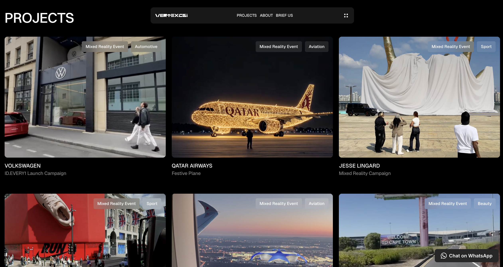

Context
Vertex CGI needed a website that worked harder.
The previous platform looked limited, was hard to update, and did not support the way the team worked. You could not easily add new project cases. You could not clearly track where leads came from. The website was not properly connected to HubSpot, Slack, or internal sales emails.
That created a simple problem.
People could find the company, but the team could not turn that attention into a clean sales process.
My Role
I owned the project from start to finish.
I worked with the web designer, defined the structure, managed the process, shaped the content logic, and made sure the website supported both the brand and the sales team.
Challenge
The old website had 4 main issues:
- It was hard for the team to update.
- It did not match the company’s current brand direction.
- It did not guide visitors clearly from interest to action.
- It did not connect properly to HubSpot, Slack, and sales email workflows.
Because of that, the team had weak visibility over website leads. It was hard to know who filled in the brief, where the lead came from, and how fast the team responded.
Approach
Website has to be a business tool, not just a visual portfolio.
We chose Framer because the team needed a platform that was flexible, clean, and easy to update without relying on developers every time.
User journey now follows a clear funnel:
- First, you understand what Vertex CGI does.
- Then, you see proof through projects, numbers, and clear positioning.
- Then, you get a reason to contact the team.
The website had to feel modern, minimal, and high-end. But it also had to work. Good design is not enough if the user does not know what to do next.
Execution
- Managed the website structure, content logic, and delivery process.
- Worked with the web designer in Figma.
- Supported implementation in Framer.
- Connected the website to HubSpot, Slack, and internal sales workflows.
- Structured the site so future team members could add new cases and update content without breaking the system.
Outcome
within 3 first months
(based on SEMrush and SimilarWeb estimates)
average visit duration
(based on SEMrush and SimilarWeb estimates)
filled in the website brief within the first 2 months
in signed project value from website-generated leads within the first 2 months